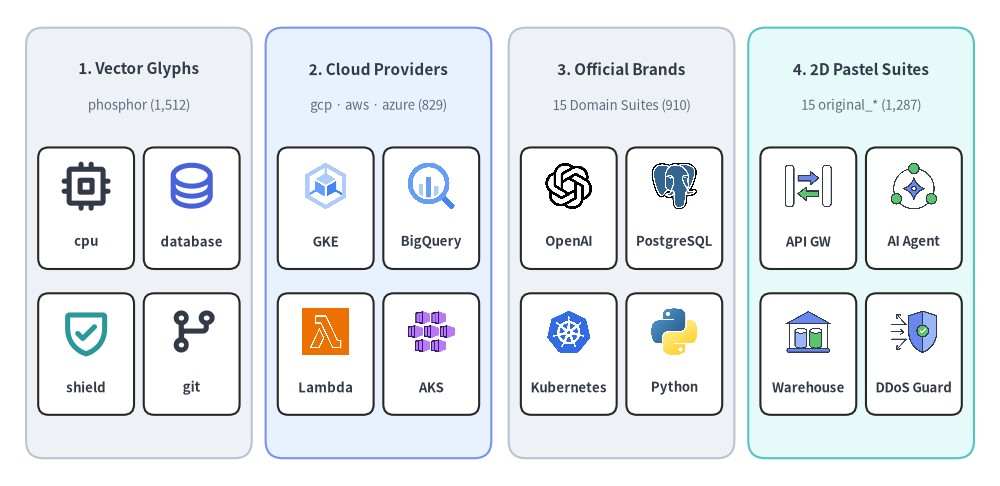
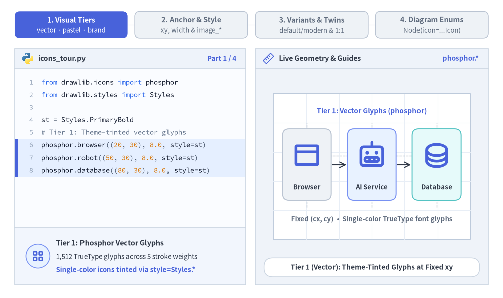
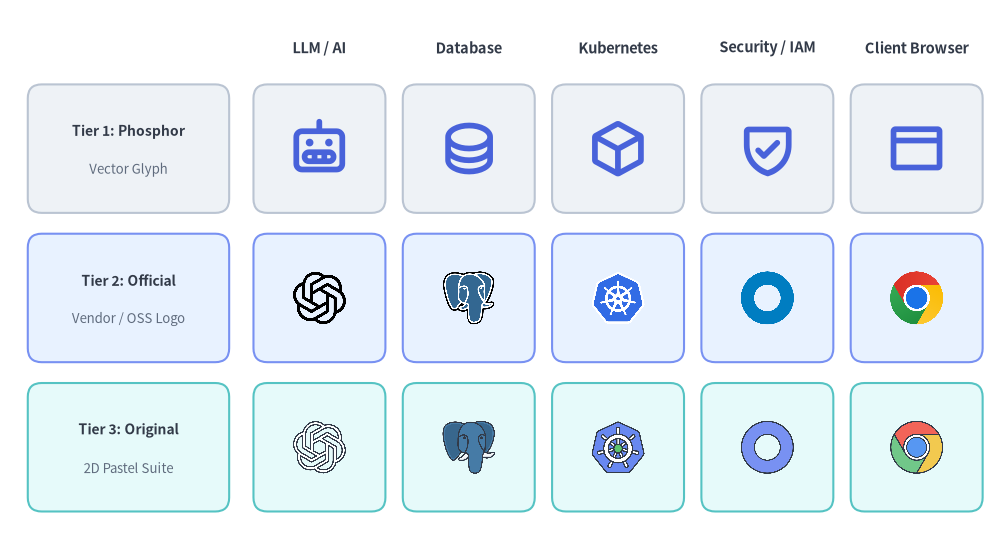
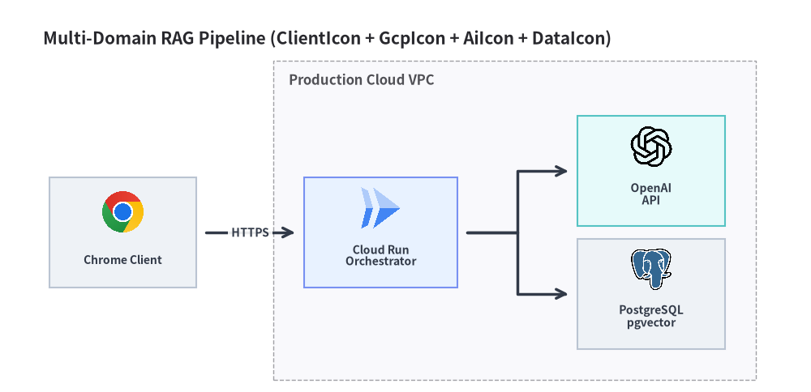

アイコン概要
Drawlib は、Phosphor ベクターグリフ（phosphor）、クラウドプロバイダースイート（gcp、aws、azure）、15 種類の公式ブランドスイート（ai、data、code、cnative、devops など）、および 15 種類のオリジナル 2D パステルスイート（original_*）という 4 つのビジュアルティアにわたる 34 個のアイコンモジュール（drawlib.icons.*）を通じて、4,538 個の正規アイコンを提供します。

Source Code
from drawlib.canvas import save, setup
from drawlib.icons import (
ai,
aws,
azure,
cnative,
code,
data,
gcp,
original_ai,
original_cloud,
original_data,
original_security,
phosphor,
)
from drawlib.shapes import rectangle
from drawlib.styles import Styles
from drawlib.text import text
setup(width=144, height=70)
tiers = [
(
20.0,
"1. Vector Glyphs",
"phosphor (1,512)",
Styles.Neutral,
[
("cpu", phosphor.cpu, Styles.DarkBold),
("database", phosphor.database, Styles.PrimaryBold),
("shield", phosphor.shield_check, Styles.SecondaryBold),
("git", phosphor.git_branch, Styles.DarkBold),
],
),
(
54.5,
"2. Cloud Providers",
"gcp · aws · azure (829)",
Styles.PrimaryNeutral,
[
("GKE", gcp.google_kubernetes_engine, Styles.Primary),
("BigQuery", gcp.bigquery, Styles.Primary),
("Lambda", aws.aws_lambda, Styles.Primary),
("AKS", azure.kubernetes_services, Styles.Primary),
],
),
(
89.5,
"3. Official Brands",
"15 Domain Suites (910)",
Styles.Neutral,
[
("OpenAI", ai.openai, Styles.Primary),
("PostgreSQL", data.postgresql, Styles.Primary),
("Kubernetes", cnative.kubernetes, Styles.Primary),
("Python", code.python, Styles.Primary),
],
),
(
124.0,
"4. 2D Pastel Suites",
"15 original_* (1,287)",
Styles.SecondaryNeutral,
[
("API GW", original_cloud.api_gateway, Styles.Primary),
("AI Agent", original_ai.ai_agent, Styles.Primary),
("Warehouse", original_data.data_warehouse, Styles.Primary),
("DDoS Guard", original_security.ddos_protection, Styles.Primary),
],
),
]
for cx, title, subtitle, card_style, icons_list in tiers:
# Column card container
rectangle((cx, 35), width=32.5, height=62, style=card_style.patch(shape_r=2.5))
text((cx, 60.0), title, style=Styles.DarkBold.patch(text_size=11.0))
text((cx, 54.8), subtitle, style=Styles.Muted.patch(text_size=9.5))
# 2x2 grid of representative icons inside each column
offsets = [(-7.6, 42.0), (7.6, 42.0), (-7.6, 21.0), (7.6, 21.0)]
sub_card_style = Styles.White.patch(shape_r=1.5, line_width=0.6)
for (dx, iy), (lbl, fn, st) in zip(offsets, icons_list, strict=True):
ix = cx + dx
rectangle((ix, iy - 2.0), width=13.8, height=17.5, style=sub_card_style)
fn((ix, iy + 1.2), width=7.5, style=st)
text((ix, iy - 6.8), lbl, style=Styles.DarkBold.patch(text_size=9.5))
save()
1. アイコンの基本概念とビジュアルツアー
全 34 個のアイコンモジュール（drawlib.icons.*）は、1:1 の正方形アスペクト比で自動スケーリングされる共通の中心アンカー (cx, cy) API を備えています。そのため、座標を再計算することなく、テーマカラーを適用できるベクターグリフ（phosphor）、落ち着いた 2D パステルツイン（original_*）、公式クラウド・ベンダーロゴの間を自在に切り替えられます。ビジュアルティア、不透明度や image_* による境界フレーム、variant パレット、そして強く型付けされたダイアグラム用 *Icon Enum がどのように連携するかを以下のアニメーションで確認してください。

Source Code
from __future__ import annotations
from drawlib.anim import Animation
from drawlib.canvas import save, setup
from drawlib.diagrams.architecture import (
AiIcon,
ArchitectureDiagram,
DataIcon,
GcpIcon,
Node,
OriginalAiIcon,
)
from drawlib.icons import (
ai,
client,
code as code_icons,
data,
gcp,
original_ai,
original_client,
original_data,
phosphor,
)
from drawlib.lines import line
from drawlib.shapes import circle, rectangle
from drawlib.smartarts import SourceCode, SourceCodeStyles
from drawlib.styles import Colors, Styles
from drawlib.text import text
W, H = 138.0, 82.0
setup(width=W, height=H)
anim = Animation(fps=10.0, loop=0)
CODE_TEXT_SIZE = 10.0
PT_TO_CANVAS = W / 720.0
FONT_CANVAS = CODE_TEXT_SIZE * PT_TO_CANVAS
LINE_H = FONT_CANVAS * 1.8
PAD_Y = FONT_CANVAS * 1.2
CODE_STYLES = SourceCodeStyles.get("default", font_lang="en", text_size=CODE_TEXT_SIZE).patch(
box_style=Styles.Neutral.patch(shape_fill_color=(0, 0, 0, 0), shape_line_width=0),
)
PANE_HEADER = Styles.Neutral.patch(
shape_fill_color=(238, 243, 250),
shape_line_color=(203, 213, 225),
shape_line_width=1.2,
shape_r=0.0,
)
EDITOR_BODY = Styles.Neutral.patch(
shape_fill_color=(250, 252, 255),
shape_line_color=(203, 213, 225),
shape_line_width=1.2,
shape_r=0.0,
)
TAKEAWAY_BODY = Styles.Neutral.patch(
shape_fill_color=(242, 246, 253),
shape_line_color=(203, 213, 225),
shape_line_width=1.2,
shape_r=0.0,
)
STUDIO_BODY = Styles.Neutral.patch(
shape_fill_color=(239, 243, 249),
shape_line_color=(203, 213, 225),
shape_line_width=1.2,
shape_r=0.0,
)
PART_ITEMS = [
("1. Visual Tiers", "vector · pastel · brand"),
("2. Anchor & Style", "xy, width & image_*"),
("3. Variants & Twins", "default/modern & 1:1"),
("4. Diagram Enums", "Node(icon=...Icon)"),
]
def draw_step_bar(active_part: int) -> None:
"""Draw top 4-part progress bar (active_part is 1..4)."""
pill_w = 31.0
pill_h = 7.4
gap = 2.0
start_x = 4.0 + pill_w / 2.0
cy = 75.2
for idx, (label, sublabel) in enumerate(PART_ITEMS, start=1):
cx = start_x + (idx - 1) * (pill_w + gap)
if idx > 1:
prev_cx = cx - (pill_w + gap)
line(
(prev_cx + pill_w / 2.0 + 0.2, cy),
(cx - pill_w / 2.0 - 0.2, cy),
style=Styles.PrimaryBold if idx <= active_part else Styles.MutedThin,
)
if idx == active_part:
st = Styles.PrimaryFlat.patch(shape_r=1.4)
tst = Styles.WhiteBold.patch(text_size=10.3)
sub_tst = Styles.White.patch(text_size=9.5)
elif idx < active_part:
st = Styles.PrimaryNeutral.patch(shape_r=1.4, shape_line_width=1.1)
tst = Styles.PrimaryBold.patch(text_size=10.3)
sub_tst = Styles.Primary.patch(text_size=9.5)
else:
st = Styles.Neutral.patch(shape_r=1.4, shape_line_width=1.1)
tst = Styles.MutedBold.patch(text_size=10.3)
sub_tst = Styles.Muted.patch(text_size=9.5)
rectangle((cx, cy), width=pill_w, height=pill_h, style=st)
text((cx, cy + 1.35), label, style=tst)
text((cx, cy - 1.55), sublabel, style=sub_tst)
def draw_left_pane(
active_part: int,
code_lines: list[str],
hl_range: tuple[int, int],
icon_fn: object,
summary_title: str,
summary_line1: str,
summary_line2: str,
) -> None:
"""Draw left Python code editor + bottom concept takeaway note."""
x0, w = 4.0, 63.5
cx = x0 + w / 2.0
top_y = 63.2
header_h = 5.4
editor_h = 43.8
takeaway_h = 15.8
rectangle((cx, top_y + header_h / 2.0), width=w, height=header_h, style=PANE_HEADER)
code_icons.python((x0 + 3.6, top_y + header_h / 2.0), width=3.4, style=Styles.Neutral)
text(
(x0 + 6.5, top_y + header_h / 2.0),
"icons_tour.py",
style=Styles.DarkBold.patch(text_size=10.2, halign="left"),
)
text(
(x0 + w - 2.6, top_y + header_h / 2.0),
f"Part {active_part} / 4",
style=Styles.PrimaryBold.patch(text_size=9.8, halign="right"),
)
rectangle((cx, top_y - editor_h / 2.0), width=w, height=editor_h, style=EDITOR_BODY)
hl_start, hl_end = hl_range
hl_top = top_y - PAD_Y - hl_start * LINE_H
hl_bot = top_y - PAD_Y - (hl_end + 1) * LINE_H
hl_cy = (hl_top + hl_bot) / 2.0
hl_h = hl_top - hl_bot
rectangle(
(cx, hl_cy),
width=w - 0.6,
height=hl_h,
style=Styles.Neutral.patch(shape_fill_color=(229, 239, 255), shape_line_width=0),
)
rectangle(
(x0 + 0.55, hl_cy),
width=0.9,
height=hl_h,
style=Styles.PrimaryFlat.patch(shape_line_width=0),
)
SourceCode.draw(
xy=(x0, top_y),
width=w,
code="\n".join(code_lines),
styles=CODE_STYLES,
code_lang="python",
show_linenum=True,
align="top_left",
)
take_cy = 3.6 + takeaway_h / 2.0
rectangle((cx, take_cy), width=w, height=takeaway_h, style=TAKEAWAY_BODY)
circle(
(x0 + 6.4, take_cy),
radius=3.3,
style=Styles.PrimaryNeutral.patch(shape_line_width=1.2),
)
icon_fn((x0 + 6.4, take_cy), width=3.8, style=Styles.PrimaryBold) # type: ignore[operator]
text(
(x0 + 11.4, take_cy + 3.6),
summary_title,
style=Styles.DarkBold.patch(text_size=10.4, halign="left"),
)
text(
(x0 + 11.4, take_cy - 0.2),
summary_line1,
style=Styles.Dark.patch(text_size=9.7, halign="left"),
)
text(
(x0 + 11.4, take_cy - 3.8),
summary_line2,
style=Styles.PrimaryBold.patch(text_size=9.6, halign="left"),
)
def draw_geometry_studio(param_badge: str, footer_caption: str) -> tuple[float, float]:
"""Draw right studio shell, inner coordinate sheet with subtle grid, and footer."""
x0, w = 70.0, 64.0
cx = x0 + w / 2.0
top_y = 63.2
header_h = 5.4
body_h = 59.6
rectangle((cx, top_y + header_h / 2.0), width=w, height=header_h, style=PANE_HEADER)
phosphor.ruler((x0 + 3.6, top_y + header_h / 2.0), width=3.4, style=Styles.Primary)
text(
(x0 + 6.5, top_y + header_h / 2.0),
"Live Geometry & Guides",
style=Styles.DarkBold.patch(text_size=10.2, halign="left"),
)
text(
(x0 + w - 2.6, top_y + header_h / 2.0),
param_badge,
style=Styles.PrimaryBold.patch(text_size=9.6, halign="right"),
)
rectangle((cx, 3.6 + body_h / 2.0), width=w, height=body_h, style=STUDIO_BODY)
sheet_cx, sheet_cy = cx, 36.2
sheet_w, sheet_h = 54.0, 40.0
sx0, sy0 = sheet_cx - sheet_w / 2.0, sheet_cy - sheet_h / 2.0
rectangle(
(sheet_cx, sheet_cy),
width=sheet_w,
height=sheet_h,
style=Styles.Neutral.patch(
shape_fill_color=(255, 255, 255),
shape_line_color=(180, 194, 214),
shape_line_width=1.2,
),
)
g_st = Styles.MutedThin.patch(line_color=(232, 238, 246), line_width=0.8)
for gx in range(1, 6):
vx = sx0 + gx * (sheet_w / 6.0)
line((vx, sy0), (vx, sy0 + sheet_h), style=g_st)
for gy in range(1, 5):
vy = sy0 + gy * (sheet_h / 5.0)
line((sx0, vy), (sx0 + sheet_w, vy), style=g_st)
rectangle(
(cx, 8.4),
width=59.2,
height=5.2,
style=Styles.Neutral.patch(
shape_fill_color=(255, 255, 255),
shape_line_color=(203, 213, 225),
shape_line_width=1.1,
shape_r=2.4,
),
text=footer_caption,
text_style=Styles.DarkBold.patch(text_size=9.8),
)
return sheet_cx, sheet_cy
# =========================================================================
# Part 1: 1. Visual Tiers — Browser -> AI Service -> Database at fixed (cx, cy)
# =========================================================================
CODE_1A = [
"from drawlib.icons import phosphor",
"from drawlib.styles import Styles",
"",
"st = Styles.PrimaryBold",
"# Tier 1: Theme-tinted vector glyphs",
"phosphor.browser((20, 30), 8.0, style=st)",
"phosphor.robot((50, 30), 8.0, style=st)",
"phosphor.database((80, 30), 8.0, style=st)",
]
CODE_1B = [
"from drawlib.styles import Styles",
"from drawlib.icons import (",
" original_ai, original_client,",
" original_data,",
")",
"st = Styles.Primary",
"original_client.chrome(",
" (20, 30), width=8.0, style=st)",
"original_ai.openai((50, 30), 8, style=st)",
"original_data.postgresql(",
" (80, 30), width=8.0, style=st)",
]
CODE_1C = [
"from drawlib.icons import ai, client, data",
"from drawlib.styles import Styles",
"",
"# Tier 3: Official vendor & OSS logos",
"st = Styles.Primary",
"client.chrome((20, 30), width=8, style=st)",
"ai.openai((50, 30), width=8, style=st)",
"data.postgresql((80, 30), 8, style=st)",
]
def draw_tier_pipeline(
scx: float,
scy: float,
top_banner: str,
icons_spec: list[tuple[str, object, object]],
icon_w: float,
bottom_note: str,
) -> None:
"""Render connected 3-node pipeline at fixed (cx, cy) coordinates."""
text((scx, scy + 15.2), top_banner, style=Styles.PrimaryBold.patch(text_size=9.8))
cy_card = scy + 0.5
iy = scy + 3.0
xs = [scx - 17.8, scx, scx + 17.8]
card_styles = [Styles.Neutral, Styles.PrimaryNeutral, Styles.SecondaryNeutral]
# Fixed coordinate alignment guides behind cards
line((scx - 24.5, iy), (scx + 24.5, iy), style=Styles.MutedDashed.patch(line_width=0.9))
for nx in xs:
line((nx, scy - 11.2), (nx, scy + 12.0), style=Styles.MutedDashed.patch(line_width=0.9))
for (nx, card_st), (role, fn, ist) in zip(zip(xs, card_styles, strict=True), icons_spec, strict=True):
rectangle((nx, cy_card), width=13.4, height=19.6, style=card_st.patch(shape_r=1.8, shape_line_width=1.4))
fn((nx, iy), width=icon_w, style=ist) # type: ignore[operator]
text((nx, scy - 5.6), role, style=Styles.DarkBold.patch(text_size=9.5))
line((xs[0] + 7.0, cy_card), (xs[1] - 7.0, cy_card), arrow_head="->", style=Styles.DarkBold.patch(line_width=1.5))
line((xs[1] + 7.0, cy_card), (xs[2] - 7.0, cy_card), arrow_head="->", style=Styles.DarkBold.patch(line_width=1.5))
text((scx, scy - 14.5), bottom_note, style=Styles.MutedBold.patch(text_size=9.5))
TIER_STATES = [
(
3.2,
CODE_1A,
(5, 7),
"Tier 1: Phosphor Vector Glyphs",
"1,512 TrueType glyphs across 5 stroke weights",
"Single-color icons tinted via style=Styles.*",
"phosphor.*",
"Tier 1 (Vector): Theme-Tinted Glyphs at Fixed xy",
"Tier 1: Vector Glyphs (phosphor)",
[
("Browser", phosphor.browser, Styles.PrimaryBold),
("AI Service", phosphor.robot, Styles.PrimaryBold),
("Database", phosphor.database, Styles.PrimaryBold),
],
7.8,
"Fixed (cx, cy) • Single-color TrueType font glyphs",
),
(
0.45,
CODE_1B,
(6, 10),
"Tier 2: Original 2D Pastel Suites",
"1,287 icons across 15 original_* domain modules",
"Cohesive flat pastel palette across all domains",
"original_*",
"Tier 2 (2D Pastel): Calm Cohesive Multi-Domain Style",
"Switching Tier -> 2D Pastel Twins...",
[
("Browser", original_client.chrome, Styles.Primary.patch(alpha=0.65)),
("AI Service", original_ai.openai, Styles.Primary.patch(alpha=0.65)),
("Database", original_data.postgresql, Styles.Primary.patch(alpha=0.65)),
],
6.2,
"Same (cx, cy) anchors • Swapping module imports",
),
(
3.2,
CODE_1B,
(6, 10),
"Tier 2: Original 2D Pastel Suites",
"1,287 icons across 15 original_* domain modules",
"Cohesive flat pastel palette across all domains",
"original_*",
"Tier 2 (2D Pastel): Calm Cohesive Multi-Domain Style",
"Tier 2: 2D Pastel Twins (original_*)",
[
("Browser", original_client.chrome, Styles.Primary),
("AI Service", original_ai.openai, Styles.Primary),
("Database", original_data.postgresql, Styles.Primary),
],
7.8,
"Fixed (cx, cy) • Unified 2D flat pastel aesthetic",
),
(
0.45,
CODE_1C,
(5, 7),
"Tier 3: Official Cloud & Brand Logos",
"1,739 cloud (gcp/aws/azure) & OSS/vendor PNGs",
"Swap module import without changing coordinates!",
"Official PNGs",
"Tier 3 (Official): Exact Vendor & OSS Product Logos",
"Switching Tier -> Official Brand Logos...",
[
("Browser", client.chrome, Styles.Primary.patch(alpha=0.65)),
("AI Service", ai.openai, Styles.Primary.patch(alpha=0.65)),
("Database", data.postgresql, Styles.Primary.patch(alpha=0.65)),
],
6.2,
"Same (cx, cy) anchors • Swapping module imports",
),
(
3.2,
CODE_1C,
(5, 7),
"Tier 3: Official Cloud & Brand Logos",
"1,739 cloud (gcp/aws/azure) & OSS/vendor PNGs",
"Swap module import without changing coordinates!",
"Official PNGs",
"Tier 3 (Official): Exact Vendor & OSS Product Logos",
"Tier 3: Official Logos (client · ai · data)",
[
("Browser", client.chrome, Styles.Primary),
("AI Service", ai.openai, Styles.Primary),
("Database", data.postgresql, Styles.Primary),
],
7.8,
"Fixed (cx, cy) • Recognizable vendor & OSS logos",
),
]
for dur, c_lines, hl, s_t, s_1, s_2, badge, foot, banner, spec, iw, b_note in TIER_STATES:
with anim.frame(duration=dur):
draw_step_bar(1)
draw_left_pane(1, c_lines, hl, phosphor.squares_four, s_t, s_1, s_2)
scx, scy = draw_geometry_studio(badge, foot)
draw_tier_pipeline(scx, scy, banner, spec, iw, b_note)
# =========================================================================
# Part 2: 2. Anchor & Style — (cx, cy), width (8.0 -> 12.5), alpha, image_*
# =========================================================================
for w_val, dur in ((8.0, 0.50), (12.5, 3.2)):
code_2a = [
"from drawlib.icons import gcp",
"from drawlib.styles import Styles",
"",
"# Center-anchored (cx, cy), 1:1 square",
"gcp.cloud_run(",
" (50, 30),",
f" width={w_val:.1f},",
" style=Styles.Primary,",
")",
]
with anim.frame(duration=dur):
draw_step_bar(2)
draw_left_pane(
2,
code_2a,
(4, 8),
phosphor.bounding_box,
"Center Anchor (cx, cy) & Square Width",
"All 34 modules anchor at geometric center xy",
"width scales height automatically at 1:1 ratio",
)
scx, scy = draw_geometry_studio(
f"width = {w_val:.1f}",
f"gcp.cloud_run(xy, width={w_val:.1f}) • 1:1 Square Scaling",
)
cy_i = scy - 0.8
if w_val > 8.0:
rectangle(
(scx, cy_i),
width=8.0,
height=8.0,
style=Styles.MutedDashed.patch(
shape_fill_color=(0, 0, 0, 0),
shape_line_color=(180, 195, 218),
shape_line_width=1.0,
),
)
rectangle(
(scx, cy_i),
width=w_val,
height=w_val,
style=Styles.PrimaryDashed.patch(shape_fill_color=(0, 0, 0, 0), shape_line_width=1.2),
)
gcp.cloud_run((scx, cy_i), width=w_val, style=Styles.Primary)
circle((scx, cy_i), radius=1.1, style=Styles.DangerFlat)
text((scx, cy_i - w_val / 2.0 - 3.8), "xy = (50, 30) center", style=Styles.DangerBold.patch(text_size=9.6))
half = w_val / 2.0
line(
(scx - half, cy_i + half + 2.8),
(scx + half, cy_i + half + 2.8),
arrow_head="<->",
style=Styles.PrimaryBold.patch(line_width=1.4),
)
text((scx, cy_i + half + 5.8), f"width = {w_val:.1f}", style=Styles.PrimaryBold.patch(text_size=9.8))
line(
(scx - half - 2.8, cy_i - half),
(scx - half - 2.8, cy_i + half),
arrow_head="<->",
style=Styles.DarkBold.patch(line_width=1.4),
)
text(
(scx - half - 4.4, cy_i),
f"{w_val:.1f}\n(1:1)",
style=Styles.DarkBold.patch(text_size=9.5, halign="right"),
)
for a_val, dur in ((0.65, 0.45), (0.35, 3.2)):
code_2b = [
"from drawlib.icons import gcp",
"from drawlib.styles import Styles",
"",
"st = Styles.Primary",
"# Active (1.0) vs Standby (alpha=0.35)",
"gcp.cloud_run((34, 30), 11.0, style=st)",
"gcp.cloud_run(",
" (66, 30),",
" width=11.0,",
f" style=st.patch(alpha={a_val:.2f}),",
")",
]
with anim.frame(duration=dur):
draw_step_bar(2)
draw_left_pane(
2,
code_2b,
(6, 10),
phosphor.bounding_box,
"Standby Opacity (style.alpha)",
"alpha fades icon artwork smoothly (0.0 to 1.0)",
"alpha=0.35 marks standby or deprecated replicas",
)
scx, scy = draw_geometry_studio(
f"alpha = {a_val:.2f}",
f"Active (1.0) vs. Standby Replica (alpha={a_val:.2f})",
)
lx, rx = scx - 13.2, scx + 13.2
cy_c = scy + 0.2
rectangle((lx, cy_c), width=20.4, height=25.0, style=Styles.PrimaryNeutral.patch(shape_r=2.0))
gcp.cloud_run((lx, cy_c + 2.8), width=10.8, style=Styles.Primary)
text((lx, cy_c - 6.6), "Active", style=Styles.DarkBold.patch(text_size=9.8))
text((lx, cy_c - 9.8), "alpha = 1.00", style=Styles.PrimaryBold.patch(text_size=9.5))
rectangle((rx, cy_c), width=20.4, height=25.0, style=Styles.Neutral.patch(shape_r=2.0))
gcp.cloud_run((rx, cy_c + 2.8), width=10.8, style=Styles.Primary.patch(alpha=a_val))
text((rx, cy_c - 6.6), "Standby", style=Styles.DarkBold.patch(text_size=9.8))
text((rx, cy_c - 9.8), f"alpha = {a_val:.2f}", style=Styles.MutedBold.patch(text_size=9.5))
line((lx + 10.5, cy_c + 2.8), (rx - 10.5, cy_c + 2.8), arrow_head="->", style=Styles.PrimaryDashed)
for bw_val, dur in ((0.9, 0.45), (1.8, 3.3)):
code_2c = [
"from drawlib.icons import gcp",
"from drawlib.styles import Colors, Styles",
"",
"framed = Styles.Primary.patch(",
" image_tint_color=Colors.Primary1,",
" image_border_color=Colors.Primary,",
f" image_border_width={bw_val:.1f},",
' image_border_style="dashed",',
")",
"gcp.cloud_run(",
" (50, 30), width=12.5, style=framed)",
]
with anim.frame(duration=dur):
draw_step_bar(2)
draw_left_pane(
2,
code_2c,
(3, 8),
phosphor.frame_corners,
"Background Tint & Bounding Frame",
"image_tint_color fills transparent RGBA pixels",
"image_border_* draws solid/dashed icon frames",
)
scx, scy = draw_geometry_studio(
"image_border_*",
f"image_tint_color + {bw_val:.1f}pt Dashed image_border_*",
)
cy_f = scy + 1.2
framed_st = Styles.Primary.patch(
image_tint_color=Colors.Primary1,
image_border_color=Colors.Primary,
image_border_width=bw_val,
image_border_style="dashed",
)
gcp.cloud_run((scx, cy_f), width=12.5, style=framed_st)
# Callouts pointing to background tint and dashed border
line((scx - 16.2, cy_f + 6.5), (scx - 6.8, cy_f + 3.2), arrow_head="->", style=Styles.PrimaryBold)
text(
(scx - 16.8, cy_f + 8.0),
"image_tint_color",
style=Styles.PrimaryBold.patch(text_size=9.5, halign="center"),
)
line((scx + 15.8, cy_f - 6.5), (scx + 6.8, cy_f - 4.2), arrow_head="->", style=Styles.DarkBold)
text(
(scx + 14.5, cy_f - 9.8),
'border="dashed"',
style=Styles.DarkBold.patch(text_size=9.5, halign="center"),
)
text(
(scx, scy - 14.2),
"RGBA alpha filled over grid • 1.8pt dashed frame",
style=Styles.MutedBold.patch(text_size=9.5),
)
# =========================================================================
# Part 3: 3. Variants & Twins — variant="default"|"modern" & 1:1 Twins
# =========================================================================
for var_name, iw_v, dur in (("default", 10.5, 3.2), ("modern", 8.8, 0.45), ("modern", 10.5, 3.2)):
code_3a = [
"from drawlib.icons import gcp",
"from drawlib.styles import Styles",
"",
"st = Styles.Primary",
"gcp.google_kubernetes_engine(",
" (34, 30), width=10.5, style=st,",
f' variant="{var_name}",',
")",
"gcp.bigquery(",
" (66, 30), width=10.5, style=st,",
f' variant="{var_name}")',
]
with anim.frame(duration=dur):
draw_step_bar(3)
draw_left_pane(
3,
code_3a,
(4, 10),
phosphor.palette,
"Color Palette Variants (variant)",
'variant="default" unifies GCP in 3-tone blue',
'variant="modern" switches to Google 4-color',
)
foot_v = (
'variant="default" • Unified 3-Tone Blue Palette'
if var_name == "default"
else 'variant="modern" • Google 4-Color Core Artwork'
)
scx, scy = draw_geometry_studio(f'variant="{var_name}"', foot_v)
banner_v = (
"Unified 3-Tone Blue (All 253 GCP Icons)"
if var_name == "default"
else "Google 4-Color Multi-Tone (Core GCP Icons)"
)
text((scx, scy + 15.0), banner_v, style=Styles.PrimaryBold.patch(text_size=9.8))
card_v_st = Styles.Neutral if var_name == "default" else Styles.PrimaryNeutral
for dx, title_s, fn_s in (
(-13.0, "GKE", gcp.google_kubernetes_engine),
(13.0, "BigQuery", gcp.bigquery),
):
cx_s = scx + dx
rectangle((cx_s, scy - 1.2), width=21.2, height=24.5, style=card_v_st.patch(shape_r=2.0))
fn_s((cx_s, scy + 2.4), width=iw_v, style=Styles.Primary, variant=var_name)
text((cx_s, scy - 6.8), title_s, style=Styles.DarkBold.patch(text_size=9.8))
text((cx_s, scy - 10.2), f'"{var_name}"', style=Styles.PrimaryBold.patch(text_size=9.5))
with anim.frame(duration=3.4):
code_3b = [
"from drawlib.icons import ai, original_ai",
"from drawlib.styles import Styles",
"",
"st = Styles.Primary",
"# 1:1 twin function name parity",
"ai.claude((22, 30), width=8.5, style=st)",
"original_ai.claude(",
" (50, 30), width=8.5, style=st)",
"# Extra vendor-neutral concept icon",
"original_ai.ai_agent(",
" (78, 30), width=8.5, style=st)",
]
draw_step_bar(3)
draw_left_pane(
3,
code_3b,
(5, 10),
phosphor.git_diff,
"1:1 Twin Naming & Concept Icons",
"ai.claude <-> original_ai.claude share names",
"original_* adds vendor-neutral concept icons",
)
scx, scy = draw_geometry_studio(
"1:1 Twins",
"1:1 Twin Parity (claude) + Concept Icons (ai_agent)",
)
text(
(scx, scy + 15.0),
"1:1 Twin Parity + Vendor-Neutral Concept Icons",
style=Styles.PrimaryBold.patch(text_size=9.7),
)
cy_t = scy - 1.0
xs_t = [scx - 18.2, scx, scx + 18.2]
twins = [
(xs_t[0], Styles.Neutral, ai.claude, "ai", ".claude"),
(xs_t[1], Styles.PrimaryNeutral, original_ai.claude, "original_ai", ".claude"),
(xs_t[2], Styles.SecondaryNeutral, original_ai.ai_agent, "original_ai", ".ai_agent"),
]
for tx, cst, tfn, mod_lbl, fn_lbl in twins:
rectangle((tx, cy_t), width=13.2, height=23.6, style=cst.patch(shape_r=1.8))
tfn((tx, cy_t + 3.8), width=8.0, style=Styles.Primary)
text((tx, cy_t - 4.8), mod_lbl, style=Styles.MutedBold.patch(text_size=9.5))
text((tx, cy_t - 8.2), fn_lbl, style=Styles.DarkBold.patch(text_size=9.5))
line(
(xs_t[0] + 6.9, cy_t + 3.8),
(xs_t[1] - 6.9, cy_t + 3.8),
arrow_head="<->",
style=Styles.PrimaryBold.patch(line_width=1.3),
)
text(((xs_t[0] + xs_t[1]) / 2.0, cy_t + 7.2), "1:1", style=Styles.PrimaryBold.patch(text_size=9.5))
text(((xs_t[1] + xs_t[2]) / 2.0, cy_t + 3.8), "+", style=Styles.DarkBold.patch(text_size=11.0))
# =========================================================================
# Part 4: 4. Diagram Enums — ArchitectureDiagram *Icon Integration
# =========================================================================
CODE_4A = [
"from drawlib.diagrams.architecture import (",
" AiIcon, DataIcon, GcpIcon,",
" Node, OriginalAiIcon,",
")",
'run = Node("Cloud Run",',
" icon=GcpIcon.CLOUD_RUN)",
'ag = Node("AI Agent",',
" icon=OriginalAiIcon.AI_AGENT)",
'llm = Node("OpenAI", icon=AiIcon.OPENAI)',
'pg = Node("PostgreSQL",',
" icon=DataIcon.POSTGRESQL)",
]
CODE_4B = [
"d = ArchitectureDiagram()",
"d.add(run, xy=(12, 7))",
"d.add(ag, xy=(12, 24))",
"d.add(llm, xy=(39, 24))",
"d.add(pg, xy=(39, 7))",
"",
"d.connect(run, ag, padding=0.7)",
"d.connect(ag, llm, padding=0.7)",
"d.connect(run, pg, padding=0.7)",
'd.draw(xy=(102, 34), align="center")',
]
for show_edges, c_lines, hl, s_t, s_1, s_2, badge, foot, dur in (
(
False,
CODE_4A,
(4, 10),
"Strongly Typed *Icon Diagram Enums",
"Every module exports a matching <Module>Icon Enum",
"Pass GcpIcon, AiIcon, OriginalAiIcon to Node()",
"*Icon Enums",
"Node(..., icon=*Icon) Mixes Any of 34 Icon Suites",
3.2,
),
(
True,
CODE_4B,
(6, 9),
"Connected Multi-Domain Topologies",
"Mix Cloud, Official Brand, and 2D Pastel Enums",
"ArchitectureDiagram & SequenceDiagram auto-route",
"d.connect()",
"GcpIcon + OriginalAiIcon + AiIcon + DataIcon",
0.45,
),
(
True,
CODE_4B,
(6, 9),
"Connected Multi-Domain Topologies",
"Mix Cloud, Official Brand, and 2D Pastel Enums",
"ArchitectureDiagram & SequenceDiagram auto-route",
"d.connect()",
"GcpIcon + OriginalAiIcon + AiIcon + DataIcon",
3.5,
),
):
with anim.frame(duration=dur):
draw_step_bar(4)
draw_left_pane(4, c_lines, hl, phosphor.graph, s_t, s_1, s_2)
scx, scy = draw_geometry_studio(badge, foot)
text(
(scx, scy + 16.2),
"4 Icon Suites in One ArchitectureDiagram",
style=Styles.PrimaryBold.patch(text_size=9.7),
)
edge_st = (
Styles.PrimaryDashed.patch(line_width=1.4)
if dur < 1.0
else Styles.DarkBold.patch(line_width=1.5)
)
d = ArchitectureDiagram(
node_style=Styles.Primary,
node_text_style=Styles.DarkBold.patch(text_size=9.6),
edge_style=edge_st,
edge_text_style=Styles.DarkBold.patch(text_size=9.5),
node_card_style=Styles.Neutral,
)
run_n = d.add(
Node(
"Cloud Run",
width=19.8,
height=11.8,
icon=GcpIcon.CLOUD_RUN,
icon_size=5.4,
card_style=Styles.PrimaryNeutral,
),
xy=(11.5, 7.0),
)
ag_n = d.add(
Node(
"AI Agent",
width=19.8,
height=11.8,
icon=OriginalAiIcon.AI_AGENT,
icon_size=5.4,
card_style=Styles.SecondaryNeutral,
),
xy=(11.5, 24.4),
)
llm_n = d.add(
Node(
"OpenAI",
width=19.8,
height=11.8,
icon=AiIcon.OPENAI,
icon_size=5.4,
card_style=Styles.Neutral,
),
xy=(38.5, 24.4),
)
pg_n = d.add(
Node(
"PostgreSQL",
width=19.8,
height=11.8,
icon=DataIcon.POSTGRESQL,
icon_size=5.4,
card_style=Styles.Neutral,
),
xy=(38.5, 7.0),
)
d.connect(run_n, ag_n, padding=0.7, show=show_edges)
d.connect(ag_n, llm_n, padding=0.7, show=show_edges)
d.connect(run_n, pg_n, padding=0.7, show=show_edges)
d.draw(xy=(scx, scy - 2.0), align="center")
save()
- 互換性のある 3 つのビジュアルティア: 同一の
(cx, cy)座標のまま、phosphorベクターグリフ、original_*2D パステルツイン、公式クラウド／ベンダー PNG（gcp、aws、azure、ai、dataなど）をシームレスに切り替えられます。 - 中心アンカーと
image_*フレーミング（xy、width、style）: すべてのアイコンはxyを中心に1:1のアスペクト比で配置され、alphaによる不透明度、image_tint_colorによる透過背景の塗りつぶし、image_border_*による実線・破線フレームをサポートします。 - パレットバリアントと
1:1ツイン命名規則（variant="default" | "modern"）: GCP の主要アイコンを 3 トーンブルーと 4 カラーパレットの間で切り替えたり、<domain>.<name>とoriginal_<domain>.<name>（さらにベンダーニュートラルな概念アイコン）をそのまま差し替えたりできます。 - 高レベルダイアグラム用 Enum（
<Module>Icon）:PhosphorIcon、GcpIcon、AiIcon、OriginalAiIcon、DataIconをはじめとする全 34 種類の*IconEnum を、Node(icon=...)やParticipant(icon=...)に直接渡せます。
2. なぜ 3 つのビジュアルスタイルがあるのか？（適切なアイコンティアの選び方）
技術図解では、用途や対象読者に応じて求められる視覚的な具体性が異なります。Drawlib は 4,538 個の正規アイコンを 4 つのモジュールグループ・3 つの明確なビジュアルスタイルに体系化しており、ドキュメントの目的に最適な表現粒度を選択できます。
| ビジュアルスタイル | モジュールと正規アイコン数 | レンダリングエンジン | 主なユースケース |
|---|---|---|---|
| 1. Phosphor ベクターアイコン | phosphor（1,512 個） |
5 種類のウェイト（thin、light、regular、bold、fill）を備えた TrueType ベクターグリフ（text() エンジン） |
UI ワイヤーフレーム、コールアウト、フローステップ、角のステータスバッジ、テーマカラー（Styles.PrimaryBold、Styles.DarkBold）で着色する汎用システム概念。 |
| 2. 公式ベンダー・ブランドアイコン | gcp、aws、azure（クラウド 829 個）+ 公式ドメイン 15 モジュール（ブランド 910 個）= 計 1,739 個 |
高解像度 512×512 RGBA PNG（image() エンジン） |
特定ベンダーのクラウドアーキテクチャ構成図（GCP、AWS、Azure）や、実際の製品ロゴ（OpenAI、PostgreSQL、Kubernetes、Python、Okta など）を用いた本番技術スタック図。 |
| 3. オリジナル 2D パステルアイコン | 15 個の original_* モジュール（1,287 個） |
Drawlib 独自のフラット 2D パステル調で制作された高解像度 512×512 RGBA PNG（image() エンジン） |
多様なベンダーロゴを混在させると視覚的な統一感が損なわれるマルチドメイン図解や、商標に依存しない概念・プラットフォーム表現が求められるベンダーニュートラルなリファレンスアーキテクチャ。 |
phosphorベクターアイコンを使う場面: ステップインジケーター、警告バッジ、高レベルな概念フローチャートなど、テーマパレット（style=Styles.PrimaryBold、Styles.WhiteBold）を継承する軽量な単色アイコンが必要な場合。- 公式ベンダー・ブランドアイコン（
gcp、aws、azure、ai、data、code、cnativeなど）を使う場面: エンジニアが一目で公式サービスや OSS ロゴを識別できることが期待される、具体的な本番デプロイ構成をドキュメント化する場合。 - オリジナル 2D パステルアイコン（
original_cloud、original_ai、original_dataなど）を使う場面: ファシリティ機器、エンタープライズ SaaS、AI エージェント、クラウドゲートウェイなど複数領域の要素を組み合わせつつ、キャンバス上のすべてのアイコンを落ち着いた統一感のある 2D イラストスタイルに揃えたい場合。
3. 共通アイコン API と座標アンカー
phosphor および全 33 個の PNG アイコンモジュールのすべてのアイコン関数は、完全に同一の中心アンカー (cx, cy) 呼び出しシグネチャを共有しています。
from drawlib.icons import ai, gcp, original_ai, phosphor
from drawlib.styles import Styles
# All icon modules anchor at the center (cx, cy) with a 1:1 square aspect ratio:
phosphor.robot((20, 25), width=10.0, style=Styles.PrimaryBold)
gcp.vertex_ai((50, 25), width=10.0, style=Styles.Primary, variant="default")
ai.openai((80, 25), width=10.0, style=Styles.Primary)
original_ai.ai_agent((110, 25), width=10.0, style=Styles.Primary)
パラメータ / Style 属性 |
対象モジュール | 説明 |
|---|---|---|
xy: tuple[float, float] |
全 34 モジュール | アイコンの中心座標 (cx, cy)（デフォルトは halign="center"、valign="center"）。 |
width: float |
全 34 モジュール | キャンバス単位での水平幅。高さは 1:1 の正方形アスペクト比で自動スケーリングされます。 |
style: Style |
全 34 モジュール | angle（度数法による回転）、alpha（0.0–1.0 の不透明度）、halign、valign、xy_shift を制御します。 |
style.icon_style、style.icon_color |
phosphor、font_icon |
ベクターグリフのウェイト（"thin"、"light"、"regular"、"bold"、"fill"）および線・塗りの色を選択します。 |
style.image_tint_color、style.image_border_* |
全 33 PNG モジュール | PNG の透過背景ピクセルを指定色で塗りつぶすか、アイコンのバウンディングボックスを実線・破線の枠線で囲みます。 |
variant: str = "default" |
全 33 PNG モジュール | "default" パレット（全モジュール対応）、または対応する gcp および network（cisco_*）アイコンで "modern" を選択します。 |
<Module>Icon Enum |
ArchitectureDiagram、SequenceDiagram |
Node(icon=...) や Participant(icon=...) に渡す強く型付けされた StrEnum / Enum クラス（PhosphorIcon、GcpIcon、AwsIcon、AiIcon、OriginalAiIcon など）。 |
3.1. ビジュアルティア間の並列比較
以下の図では、同じ 5 つのアーキテクチャ上の役割（LLM / AI、Database、Kubernetes、Security / IAM、Client Browser）を 3 つのビジュアルスタイルすべてで並べて描画しています。
from drawlib.canvas import save, setup
from drawlib.icons import (
ai,
client,
cnative,
data,
original_ai,
original_client,
original_cnative,
original_data,
original_security,
phosphor,
security,
)
from drawlib.shapes import rectangle
from drawlib.styles import Styles
from drawlib.text import text
setup(width=144, height=78)
columns = [
("LLM / AI", phosphor.robot, ai.openai, original_ai.openai),
("Database", phosphor.database, data.postgresql, original_data.postgresql),
("Kubernetes", phosphor.cube, cnative.kubernetes, original_cnative.kubernetes),
("Security / IAM", phosphor.shield_check, security.okta, original_security.okta),
("Client Browser", phosphor.browser, client.chrome, original_client.chrome),
]
rows = [
(56.5, "Tier 1: Phosphor", "Vector Glyph", Styles.Neutral),
(35.0, "Tier 2: Official", "Vendor / OSS Logo", Styles.PrimaryNeutral),
(13.5, "Tier 3: Original", "2D Pastel Suite", Styles.SecondaryNeutral),
]
# Column headers
for col_idx, (col_title, _, _, _) in enumerate(columns):
cx = 46.0 + col_idx * 21.5
text((cx, 71.0), col_title, style=Styles.DarkBold.patch(text_size=10.5))
# Row labels and icon cells
for row_idx, (cy, row_title, row_sub, card_st) in enumerate(rows):
rectangle((18.5, cy), width=29.0, height=18.5, style=card_st.patch(shape_r=2))
text((18.5, cy + 2.5), row_title, style=Styles.DarkBold.patch(text_size=10.0))
text((18.5, cy - 3.0), row_sub, style=Styles.Muted.patch(text_size=9.5))
for col_idx, (_, fn_vec, fn_off, fn_orig) in enumerate(columns):
cx = 46.0 + col_idx * 21.5
rectangle((cx, cy), width=19.0, height=18.5, style=card_st.patch(shape_r=2))
if row_idx == 0:
fn_vec((cx, cy), width=8.5, style=Styles.PrimaryBold)
elif row_idx == 1:
fn_off((cx, cy), width=8.5, style=Styles.Primary)
else:
fn_orig((cx, cy), width=8.5, style=Styles.Primary)
save()

4. 全 34 アイコンモジュール一覧ディレクトリ
全 34 個のアイコンモジュールは厳密な 1 対 1 の正規命名規則（エイリアスなし）に従っており、初回使用時に背後のフォントまたは PNG アーカイブを遅延ロードします。オフライン環境や CI 環境向けにすべてのアイコンパッケージを事前ダウンロードするには、uv run drawlib cache download --all を実行してください。
モジュール（drawlib.icons.*） |
ダイアグラム Enum（*Icon） |
ビジュアルティア | 正規アイコン数 | アセットパッケージ | 専用ドキュメントページ |
|---|---|---|---|---|---|
phosphor |
PhosphorIcon |
ベクターフォント（5 ウェイト） | 1,512 | icon_phosphor |
Phosphor ベクターアイコン |
gcp |
GcpIcon |
クラウドプロバイダー（公式） | 253 | icon_gcp |
Google Cloud (GCP) アイコン |
aws |
AwsIcon |
クラウドプロバイダー（公式） | 329 | icon_aws |
Amazon Web Services (AWS) アイコン |
azure |
AzureIcon |
クラウドプロバイダー（公式） | 250 | icon_azure |
Microsoft Azure アイコン |
cloud |
CloudIcon |
公式ブランド | 45 | icon_cloud |
クラウド・オリジナルクラウドアイコン |
original_cloud |
OriginalCloudIcon |
オリジナル 2D パステル | 147 | icon_original_cloud |
クラウド・オリジナルクラウドアイコン |
cnative |
CnativeIcon |
公式ブランド | 73 | icon_cnative |
クラウドネイティブ (K8s) アイコン |
original_cnative |
OriginalCnativeIcon |
オリジナル 2D パステル | 73 | icon_original_cnative |
クラウドネイティブ (K8s) アイコン |
devops |
DevopsIcon |
公式ブランド | 58 | icon_devops |
DevOps・オブザーバビリティアイコン |
original_devops |
OriginalDevopsIcon |
オリジナル 2D パステル | 78 | icon_original_devops |
DevOps・オブザーバビリティアイコン |
network |
NetworkIcon |
公式ブランド・Cisco | 70 | icon_network |
ネットワーク・Cisco トポロジアイコン |
original_network |
OriginalNetworkIcon |
オリジナル 2D パステル | 70 | icon_original_network |
ネットワーク・Cisco トポロジアイコン |
server |
ServerIcon |
公式ブランド・Dell／VMware | 82 | icon_server |
サーバー・OS・仮想化アイコン |
original_server |
OriginalServerIcon |
オリジナル 2D パステル | 80 | icon_original_server |
サーバー・OS・仮想化アイコン |
security |
SecurityIcon |
公式ブランド | 74 | icon_security |
セキュリティ・ゼロトラストアイコン |
original_security |
OriginalSecurityIcon |
オリジナル 2D パステル | 103 | icon_original_security |
セキュリティ・ゼロトラストアイコン |
facility |
FacilityIcon |
公式ブランド | 49 | icon_facility |
データセンター・ファシリティアイコン |
original_facility |
OriginalFacilityIcon |
オリジナル 2D パステル | 86 | icon_original_facility |
データセンター・ファシリティアイコン |
ai |
AiIcon |
公式ブランド | 60 | icon_ai |
AI・機械学習アイコン |
original_ai |
OriginalAiIcon |
オリジナル 2D パステル | 80 | icon_original_ai |
AI・機械学習アイコン |
data |
DataIcon |
公式ブランド | 70 | icon_data |
データ・データベースアイコン |
original_data |
OriginalDataIcon |
オリジナル 2D パステル | 86 | icon_original_data |
データ・データベースアイコン |
code |
CodeIcon |
公式ブランド | 97 | icon_code |
コード・言語・フレームワークアイコン |
original_code |
OriginalCodeIcon |
オリジナル 2D パステル | 121 | icon_original_code |
コード・言語・フレームワークアイコン |
business |
BusinessIcon |
公式ブランド | 48 | icon_business |
エンタープライズ・FinTech アイコン |
original_business |
OriginalBusinessIcon |
オリジナル 2D パステル | 76 | icon_original_business |
エンタープライズ・FinTech アイコン |
itservice |
ItserviceIcon |
公式ブランド | 44 | icon_itservice |
IT サービス・コンサルティングアイコン |
original_itservice |
OriginalItserviceIcon |
オリジナル 2D パステル | 64 | icon_original_itservice |
IT サービス・コンサルティングアイコン |
workspace |
WorkspaceIcon |
公式ブランド | 40 | icon_workspace |
ワークスペース・コラボレーションアイコン |
original_workspace |
OriginalWorkspaceIcon |
オリジナル 2D パステル | 57 | icon_original_workspace |
ワークスペース・コラボレーションアイコン |
social |
SocialIcon |
公式ブランド | 50 | icon_social |
ソーシャル・メディア・コミュニティアイコン |
original_social |
OriginalSocialIcon |
オリジナル 2D パステル | 66 | icon_original_social |
ソーシャル・メディア・コミュニティアイコン |
client |
ClientIcon |
公式ブランド | 60 | icon_client |
クライアント端末・エンドポイントアイコン |
original_client |
OriginalClientIcon |
オリジナル 2D パステル | 92 | icon_original_client |
クライアント端末・エンドポイントアイコン |
5. 高レベルダイアグラムでのアイコン活用（ArchitectureDiagram と SequenceDiagram）
ArchitectureDiagram（Node(..., icon=...)）と SequenceDiagram（Participant(..., icon=...)）はどちらも、全 34 種類の *Icon Enum（ClientIcon、AiIcon、GcpIcon、AwsIcon、DataIcon、OriginalAiIcon など）をネイティブに受け付けます。これにより、クライアント端末・クラウドインフラ・AI モデル・データベースを単一の接続トポロジ内で自由に組み合わせられます。
from drawlib.canvas import save, setup
from drawlib.diagrams.architecture import (
AiIcon,
ArchitectureDiagram,
ClientIcon,
DataIcon,
GcpIcon,
Node,
NodeGroup,
)
from drawlib.styles import Styles
setup(width=132, height=64)
d = ArchitectureDiagram(
node_style=Styles.Primary,
node_text_style=Styles.DarkBold.patch(text_size=10.0),
edge_style=Styles.DarkBold,
edge_text_style=Styles.DarkBold.patch(text_size=10.0),
node_card_style=Styles.Neutral,
title="Multi-Domain RAG Pipeline (ClientIcon + GcpIcon + AiIcon + DataIcon)",
)
web = d.add(
Node("Chrome Client", width=24, height=18, icon=ClientIcon.CHROME, icon_size=7.5),
xy=(14.0, 22.0),
)
vpc = d.add(NodeGroup(title="Production Cloud VPC", padding=5.0), xy=(40.0, 4.0))
run = vpc.add(
Node(
"Cloud Run\nOrchestrator",
width=25,
height=18,
icon=GcpIcon.CLOUD_RUN,
icon_size=7.5,
card_style=Styles.PrimaryNeutral,
),
xy=(16.0, 18.0),
)
llm = vpc.add(
Node(
"OpenAI\nAPI",
width=24,
height=18,
icon=AiIcon.OPENAI,
icon_size=7.5,
card_style=Styles.SecondaryNeutral,
),
xy=(60.0, 28.0),
)
pg = vpc.add(
Node(
"PostgreSQL\npgvector",
width=24,
height=18,
icon=DataIcon.POSTGRESQL,
icon_size=7.5,
),
xy=(60.0, 8.0),
)
d.connect(web, run, label="HTTPS", padding=1.5)
d.connect(run, llm, padding=1.5)
d.connect(run, pg, padding=1.5)
d.draw(xy=(6.0, 4.0))
save()
